# library path without renv initialized.
.libPaths()
# initialize renv
renv::init()
y
# library path with renv initialized.
.libPaths()Devops for Data Scientists Workshop
Exercise Worksheet
Activity 1
Fork repository
Click fork on the Posit Conf 2024 Dev-Ops workshop Github repository.
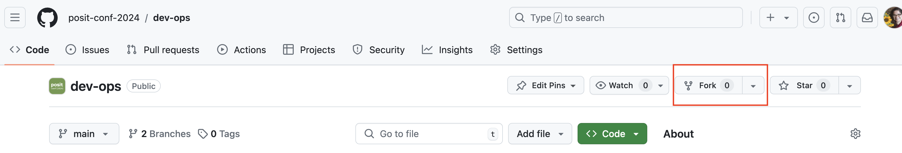
Give your fork a name and click Create.
Click on the Code button in your forked repository and copy the HTTPS URL.
Grab the https URL of your forked repo.
Open a terminal and cd to your desktop.
git clone the repository using the URL.
cd ~
cd Desktop
git clone https://github.com/{your-GH-username}/dev-ops.gitYou will be using this repo primarily for resources and instructions. We will be creating a separate git repository for class exercises.
Open a code editor in Workbench
Throughout this workshop we will be writing code in both R and Python. We will be starting with a python model so you will need to use an IDE with a Python interpretor.
Login to your Workbench environment with your credentials.
Open up a vscode session.
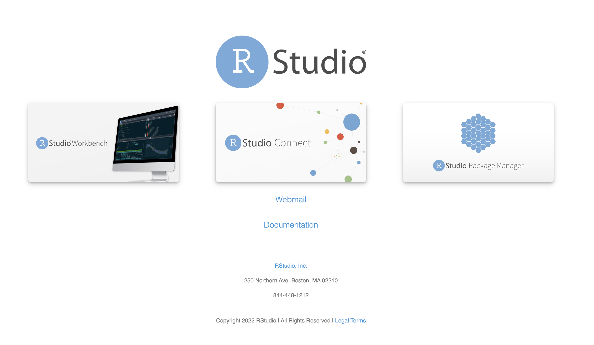
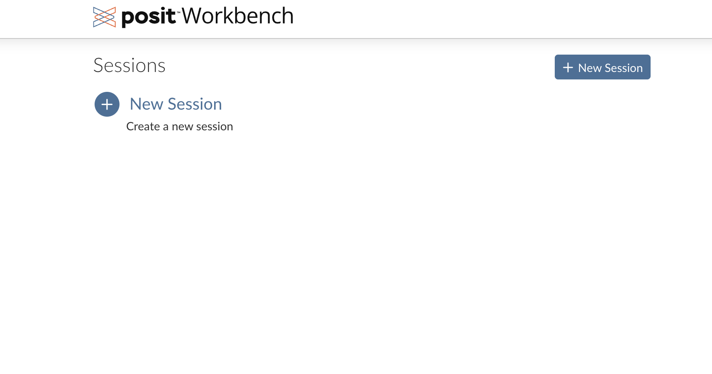
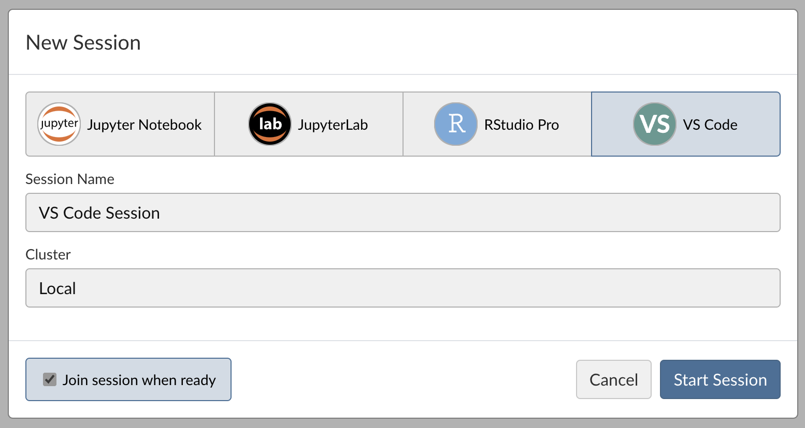
Note
If using a different Python editor on your local machine make sure that you have Python installed and on PATH. This is a good article on best practices for setting up Python using Pyenv.
Initialize a new git repository
Open your vscode terminal (press Control + Shift+ dash for quick open) and create a folder where you’ll be saving all of your classwork for this workshop. Call it something like devops_classwork. See the code example below for changing into {my} Desktop directory, creating a folder, and then changing the directory into that folder.
cd ~
mkdir devops_classwork
cd devops_classworkInitialize git in your folder.
git init
git config --global user.name "Your Name"
git config --global user.email "youremail@yourdomain.com"
git config --global init.defaultBranch mainCreate some code content
Create 3 files in your editor. Copy the code for each file from the Dev-ops repo linked below.
1. README.md - a markdown file used for documentation
2. model_pthon.py - a python file with a linear regression model
3. r_eda.R - an R file with some exploratory data analysis
Add and commit your code locally
git add README.md
git add model_python.py
git add r_eda.R
git status
git commit -m "model and readme added"Push local repo to remote github repo
Create a new repository on github.com:
Click on New in your github repositories page
Under
Ownerchoose your usernameCall the repository
devops-classworkMake it public
Click Create repository
Copy the HTTPS url in the quick setup section
Go back to the terminal in your vscode session and add the remote upstream github repo.
git remote add origin https://github.com/{your-username}/devops-classwork.git
git branch -M main
git push -u origin mainYou may be asked to authenticate your Github with vscode. Follow the instructions and authenticate.
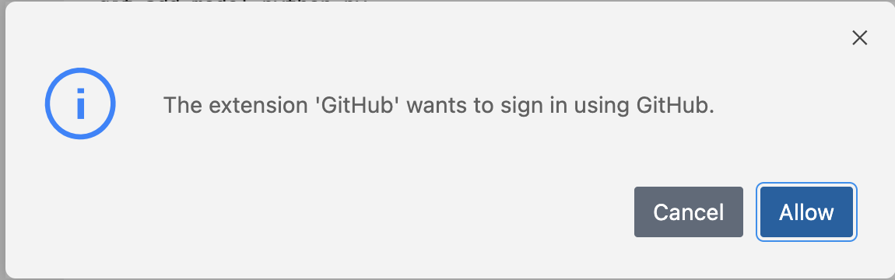
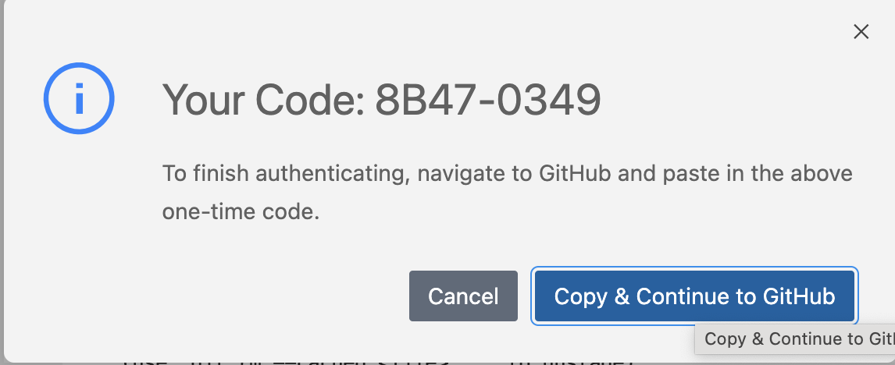
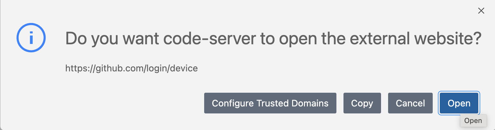
Create a branch and merge new file
git checkout -b {yourname}/small-edits
touch .gitignore # this creates a file called .gitignoreCopy the code from this file into your newly created .gitignore file.
Add, commit, push and merge your changes.
git add .gitignore
git commit "added .gitignore"
git push origin {yourname}/small-edits
git checkout main
git merge {yourname}/small-edits
git pushGo to your repository in Github and refresh your screen. You should now see all of your files there! 🤩
Delete your local branch with git branch -d {yourname}/small-edits
Create a new branch for the following exercises:
git checkout -b {yourname}/venv-renv.
Activity 2
R
Open a new Rstudio IDE session available in Workbench. If you were previously in vscode click on the Posit Workbench icon on the bottom of the screen - this will bring you back to your Workbench homepage.
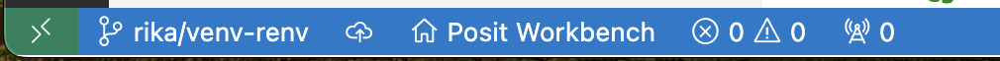
Create a new project from a working directory
File > New Project > Existing Directory > devops-classwork
Install renv with install.packages("renv")
Take a look at the renv.lock file before and after you snapshot your code. Install the following packages:
install.packages(c("palmerpenguins", "dplyr", "ggplot2"))
Feel free to run your R code which is reproduced below and see the output of your analysis.
library(palmerpenguins)
library(dplyr)
library(ggplot2)
df <- palmerpenguins::penguins
table1 <- df %>%
group_by(species, sex) %>%
summarise(
across(
where(is.numeric),
\(x) mean(x, na.rm = TRUE)
)
) %>%
knitr::kable()
## Penguin Size vs Mass by Species
plot <- df %>%
ggplot(aes(x = bill_length_mm, y = body_mass_g, color = species)) +
geom_point() +
geom_smooth(method = "lm")Make sure to snapshot your code with renv::snapshot().
Python
Open the model_python.py file in your vscode session.
If you were previously in Rstudio you can click on the R logo on the top left of the screen - this will bring you back to your Workbench homepage.
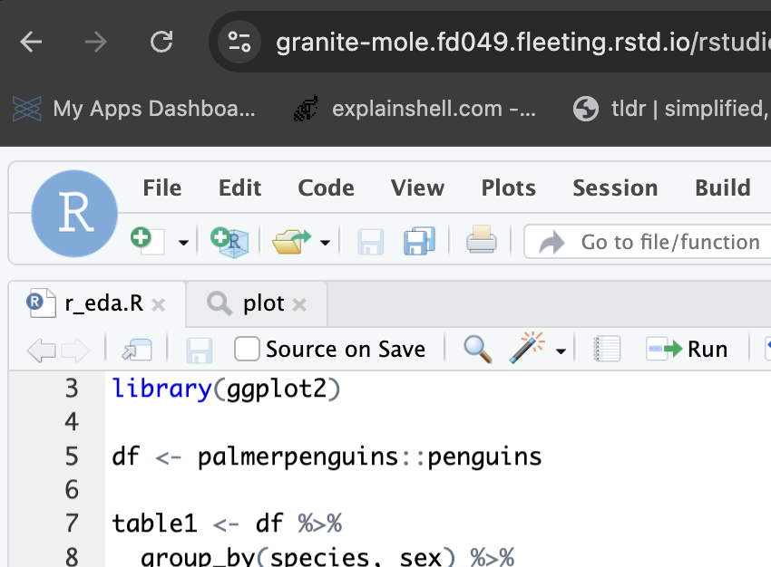
Type ‘python’ into your terminal to start an executable. You should see something similar to the below output. You can exit back to the terminal with exit().
Python 3.11.4 (main, Jun 12 2024, 14:00:16) [Clang 15.0.0 (clang-1500.3.9.4)] on darwin Type “help”, “copyright”, “credits” or “license” for more information.
>>> [Type code here]
# library path without venv initialized
import sys
print(sys.path)
exit()# run in your bash terminal
pip list
python -m venv .venv
source .venv/bin/activate
python -m pip install --upgrade pip setuptools wheel
pip list# library path with venv initialized
import sys
print(sys.path)
exit()# run in your bash terminal
pip install palmerpenguins
pip install duckdb
pip install scikit-learnRun your model_python.py in the terminal with python model_python.py. The model code should input some model statistics.
import duckdb
from palmerpenguins import penguins
from pandas import get_dummies
from sklearn.linear_model import LinearRegression
con = duckdb.connect("my-db.duckdb")
df = penguins.load_penguins()
df = con.execute("SELECT * FROM df").fetchdf().dropna()
con.close()
df.head(3)
X = get_dummies(df[["bill_length_mm", "species", "sex"]], drop_first=True)
y = df["body_mass_g"]
model = LinearRegression().fit(X, y)
print(f"R^2 {model.score(X,y)}")
print(f"Intercept {model.intercept_}")
print(f"Columns {X.columns}")
print(f"Coefficients {model.coef_}")Freeze your pip installed packages in a requirements.txt file. You should do this every time you install additional packages or modules.
# run in bash terminal
pip list > requirements.txt
pip listAdd, commit, push your code
# run in your bash terminal
git add README.md
git add r_eda.R
git add model_python.py
git add requirements.txt
git add devops_classwork.Rproj
git commit -m "creating virtual environments"
git push origin {yourname}/venv-renv
git checkout main
git merge {yourname}/venv-renv
git pushActivity 3
Create github actions
Go to Actions in your github repository and enable github actions if you have never done so before.
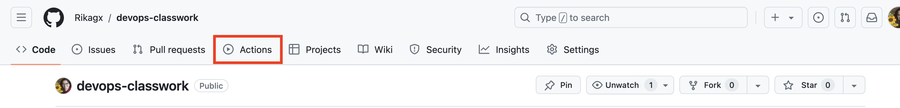
In your project terminal (vscode or Rstudio IDE) create a .yaml file.
Github actions MUST be created as a .yaml file with the following directory structure:
mkdir .github
cd .github/
mkdir workflows
cd workflows/
touch .yamlCopy the [following(https://docs.github.com/en/actions/writing-workflows/quickstart)] into your yaml file.
Create a new branch, add, commit, and push your code to main.
git checkout -b {yourname}/action
git add ~/devops_classwork/.github/workflows/.yaml
git commit -m "added an action"
git push origin {yourname}/action
git checkout main
git merge {yourname}/action
git pushVisit the Actions tab of your repo to see if the Action succeeded.
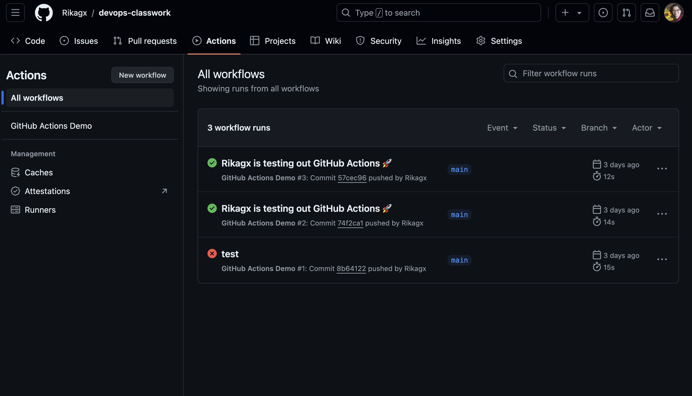
Activity 4
Pre-commit hooks
# run in your bash terminal
pip install pre-commit
pip install blackCreate a file called .pre-commit-config.yaml and add the following:
# run in your bash terminal
pre-commit installStage and commit your code and fix any errors that the hooks identify.
git checkout -b {yourname}/precommit
git add .pre-commit.config.yaml
git add model_python.py
git commit -m "added pre-commit hook"You will see that parts of your commits have failed. The hook automatically “fixes” errors it finds. Keep adding and committing your files until your commits have all passed.
If the black commit is skipped try calling it directly with pre-commit run black -a. You can also run a single file outside of the hook using black model_python.py as well. You can open the model python file and see what was modified.
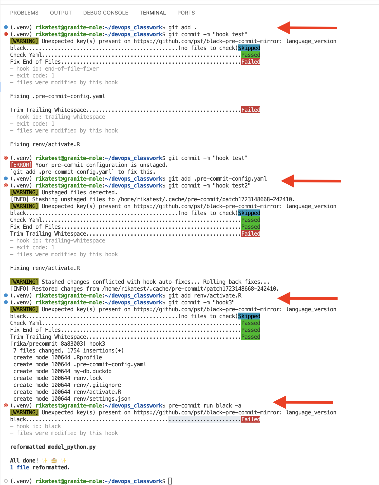
Try adding some other hooks that look interesting or read about the hooks and packages that you’ve been using:
Finish pushing your code
git push origin {yourname}/precommit
git checkout main
git merge {yourname}/precommit
git pushActivity 5
Docker Run
The basic docker run command takes this form:
docker run [OPTIONS] [IMAGE:TAG] [COMMAND] [ARG...]
In the below exercise we will practice running docker containers with different options or “flags.”
Currently we have no docker images downloaded. Confirm this with
docker image ls -a.Pull down a Dockerhub linux image. Confirm that the image is downloaded with the ls command.
docker pull ubuntudocker image ls -aRun an interactive container with the bash shell attached. Run a few linux commands to explore your environment and then exit the container.
sudo docker run -it ubuntu bash
ls
whoami
hostnameExit the container with Ctrl+D or exit. This docker command runs the container in the foreground so you are unable to access the command prompt for your original alpine server. For this reason interactive mode is often used for development and testing.
Run the container in detached mode and then list all your containers and check your processes. Stop the container using its name or ID.
docker run -d ubuntu
docker container ls -a
docker ps -a
docker container stop [name_of_container]You should see that the ubuntu container was created and then exited. The container ID is shown with an exited status and the command line is still accessible.
Detached containers run in the background, so the container keeps running until the application process exits (which is what happened here), or you stop the container. For this reason detached mode is often used for production purposes.
Activity 6
Debugging Containers
The docker exec command is very similar to the docker run -it command. Both are very helpful for debugging containers as they allow you to jump inside your container instance. The exec command needs a running container to execute any command, whereas the -it flag starts a container and places you into a terminal in interactive mode. Use the docker exec command to execute a bash command in a running container. This can be used to execute any command within a running container.
Be careful not use docker exec to change your container as once it is deleted you will lose any changes you’ve made!
docker exec requires two arguments - the container and the command you want to run.
docker exec [OPTIONS] CONTAINER [COMMAND] [ARG…] Use docker run -it to jump into an ubuntu container. docker run -it ubuntu exit Use docker exec to run commands in a container
docker container ls -a # to get a container ID of a running container
docker exec -it CONTAINER_ID bash
exit
docker exec CONTAINER_ID lsLets run a detached MySQL container and then check out some logs. The database requires a password to work. In production you should never pass credentials directly in your command but we will do it for testing purposes. (The forward slashes below allow you to use a new line for your code)
docker container run -d --name mydb \
-e MYSQL_ROOT_PASSWORD=my-secret-pw \
mysql
docker container logs mydbActivity 7
Create a simple FastAPI
In your vscode or Python editor create a file called app.py with the following code:
from fastapi import FastAPI
import uvicorn
app = FastAPI()
@app.get("/say_hello/{name}")
def say_hello(name):
return {"Hello from Seattle": name}Run the app with uvicorn app:app --reload. Click into the workbench icon on the left side of the screen and go to the proxied server link that shows up. This link should have an error 😥
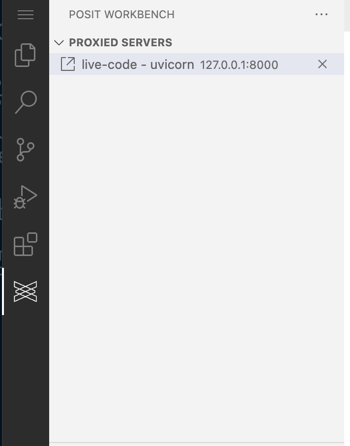
Add /say_hello/{your-name-here} to the end of the url and click enter. It should work now!!!

Add `/docs#/ to the end of the initial url and click enter. It should bring you to the Swagger documentation!

Activity 8
Create a FastAPI using our penguin model
Note
This code was tested using Python 3.11.4.
Create and activate a virtual environment.
python -m venv .venv
source .venv/bin/activate
python -m pip install --upgrade pip setuptools wheelCreate 3 files
model.py - our linear regression model file
"""
This script creates a linear regression model
to predict the body mass of palmer penguins
given their sex, species, and bill length in mm
"""
import joblib
import duckdb
from palmerpenguins import penguins
from pandas import get_dummies
from sklearn.linear_model import LinearRegression
con = duckdb.connect("my-db.duckdb")
df = penguins.load_penguins()
df = con.execute("SELECT * FROM df").fetchdf().dropna()
con.close()
df.head(3)
X = get_dummies(df[["bill_length_mm", "species", "sex"]], drop_first=True)
y = df["body_mass_g"]
model = LinearRegression().fit(X, y)
joblib.dump(model, 'penguin_model.joblib')main.py - our prediction fastapi
from fastapi import FastAPI, HTTPException
from pydantic import BaseModel
import joblib
import pandas as pd
# Load the model
model = joblib.load('penguin_model.joblib')
# Initialize FastAPI app
app = FastAPI()
# Define the request body
class PenguinFeatures(BaseModel):
species: str
sex: str
bill_length_mm: float
# Define the endpoint for prediction
@app.post("/predict")
def predict(features: PenguinFeatures):
# Map species and sex to the appropriate format used in training
species_map = {"Adelie": 0, "Chinstrap": 1, "Gentoo": 2}
sex_map = {"male": 0, "female": 1}
try:
species = species_map[features.species]
sex = sex_map[features.sex]
except KeyError:
raise HTTPException(status_code=400, detail="Invalid species or sex")
# Prepare the input data for the model
input_data = pd.DataFrame([{
"bill_length_mm": features.bill_length_mm,
"species_Chinstrap": 1 if features.species == "Chinstrap" else 0,
"species_Gentoo": 1 if features.species == "Gentoo" else 0,
"sex_male": 1 if features.sex == "male" else 0,
}])
# Make prediction
prediction = model.predict(input_data)[0]
# Return the prediction
return {"body_mass_g": prediction}requirements.txt - package requirements
annotated-types==0.7.0
anyio==4.4.0
click==8.1.7
duckdb==1.0.0
fastapi==0.112.0
h11==0.14.0
idna==3.7
joblib==1.4.2
numpy==2.0.1
palmerpenguins==0.1.4
pandas==2.2.2
pydantic==2.8.2
pydantic_core==2.20.1
PyJWT==2.9.0
python-dateutil==2.9.0.post0
pytz==2024.1
rsconnect_python==1.24.0
scikit-learn==1.5.1
scipy==1.14.0
semver==2.13.0
six==1.16.0
sniffio==1.3.1
starlette==0.37.2
threadpoolctl==3.5.0
typing_extensions==4.12.2
tzdata==2024.1
uvicorn==0.30.5Install our requirements file
pip install -r requirements.txtLogin to your server environment and click on the Connect widget.
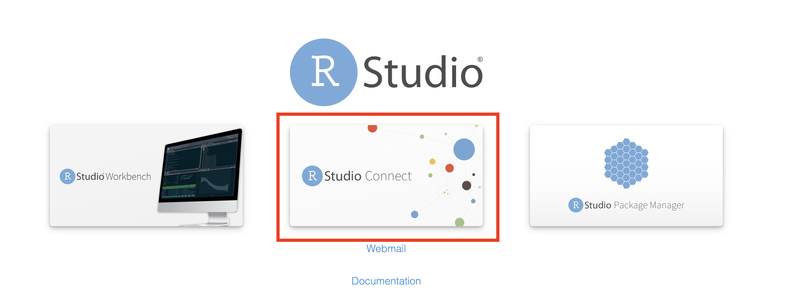
Start the Automated Stock report jumpstart example. Click through until you get to Step 5 and then copy the url. This is the url for your Connect server. Close out of the jumpstart example.
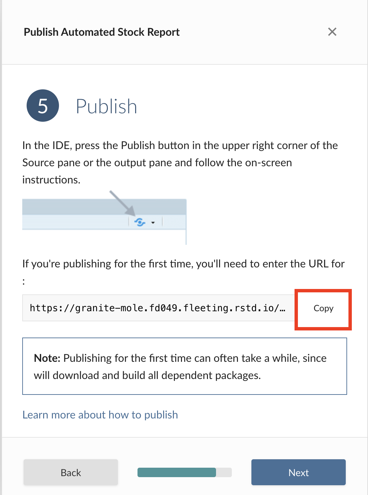
Click on your name > API Keys tab. Create an API key and note it down somewhere safe.
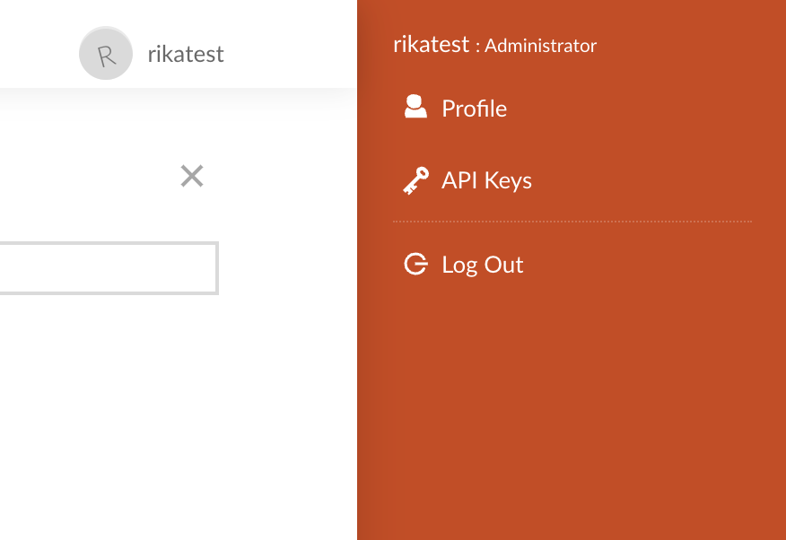
Jump back to your vscode virtual environment and add your server url and api key to the rsconnect-python CLI.
To add a server, you need the following:
- Your server URL
- Your API key. See the API Keys section.
- A nickname for the server that you provide
pip install rsconnect-python
rsconnect add \
--server https://my.connect.server/ \
--name myServer \
--api-key $CONNECT_API_KEYDeploy our FastAPI to the Connect server.
rsconnect deploy fastapi \
-n myServer \
--entrypoint main:app \
./Activity 9
Test the API in your terminal
curl -X 'POST' \
'https://granite-mole.fd049.fleeting.rstd.io/rsconnect/content/e444fd65-634f-4b6a-bc78-be70c790cc3f/predict' \
-H 'accept: application/json' \
-H 'Content-Type: application/json' \
-d '{
"species": "Adelie",
"sex": "female",
"bill_length_mm": 40.0
}'Fix the authorization error by passing in your API key.
export CONNECT_API_KEY=So4JUDFJ01mziHx2QudAw9iUJt2z0Ylj
curl -X 'POST' \
'https://granite-mole.fd049.fleeting.rstd.io/rsconnect/content/e444fd65-634f-4b6a-bc78-be70c790cc3f/predict' \
-H 'accept: application/json' \
-H 'Content-Type: application/json' \
-H "Authorization: Key ${CONNECT_API_KEY}" \
-d '{
"species": "Adelie",
"sex": "female",
"bill_length_mm": 40.0
}'Activity 10
Create a Shiny UI for the prediction API
Open an Rstudio IDE session and create a shiny app file called app.R. Add your API key to your .Renviron file. You can do this easily using the usethis package: usethis::edit_r_environ().
app.R
library(shiny)
library(httr2)
# Correct API URL
api_url <- "https://granite-mole.fd049.fleeting.rstd.io/rsconnect/content/e444fd65-634f-4b6a-bc78-be70c790cc3f/predict"
ui <- fluidPage(
titlePanel("Penguin Mass Predictor"),
# Model input values
sidebarLayout(
sidebarPanel(
sliderInput(
"bill_length",
"Bill Length (mm)",
min = 30,
max = 60,
value = 45,
step = 0.1
),
selectInput(
"sex",
"Sex",
c("male", "female") # Ensure values match what FastAPI expects
),
selectInput(
"species",
"Species",
c("Adelie", "Chinstrap", "Gentoo")
),
# Get model predictions
actionButton(
"predict",
"Predict"
)
),
mainPanel(
h2("Penguin Parameters"),
verbatimTextOutput("vals"),
h2("Predicted Penguin Mass (g)"),
textOutput("pred")
)
)
)
server <- function(input, output) {
# Input params
vals <- reactive(
list(
bill_length_mm = input$bill_length,
species = input$species, # Send the species directly
sex = tolower(input$sex) # Ensure "male" and "female" are lowercase
)
)
# Fetch prediction from API
pred <- eventReactive(
input$predict,
{
req <- httr2::request(api_url) |>
httr2::req_body_json(vals()) |>
httr2::req_headers(
"Content-Type" = "application/json",
"Authorization" = paste("Bearer", Sys.getenv("key")) # Add API key to headers
) |>
httr2::req_perform()
httr2::resp_body_json(req)
},
ignoreInit = TRUE
)
# Render to UI
output$pred <- renderText(pred()$body_mass_g)
output$vals <- renderPrint(vals())
}
# Run the application
shinyApp(ui = ui, server = server)Push-button deploy using the following instructions: https://docs.posit.co/connect/user/publishing-rstudio/